IWD:EE Portrait Variations
A mod for Icewind Dale: Enhanced Edition that gives you more options for enjoying the stunning portraits in the game.
| Version: | 1.0 |
|---|
| Languages: | English (installer/readme); language-independent (mod content) |
|---|
| Platforms: | Windows, Mac OS X, Linux |
|---|
| Author: | Ineth |
|---|
| Links: | forum thread |
|---|
Installation
Extract the contents of the mod archive into your game folder, and then:
Components
Zoomed-in side bar portraits
This component modifies all the built-in portraits, to make their small versions (which are displayed along the right edge of the main game screen) zoomed in closer and more consistently on the characters' faces.
It also flips them where necessary to make sure no characters are facing the screen edge.

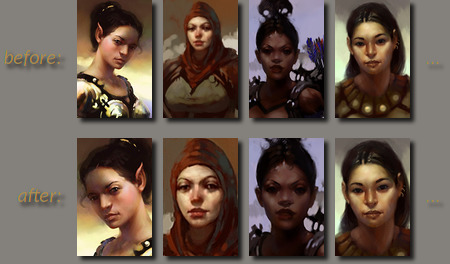
Photoshopped variations
This component adds a few additional portraits which I photoshopped from built-in ones - either to make them suitable for other classes (e.g. Cleric weapon replaced with Mage weapon), or for cosmetic changes (e.g. clothing color).
The variations appear right after the corresponding original in the in-game portrait selection screen.


Fluff
If you have praise, criticism, or suggestions for this mod, please leave a comment in the forum thread linked at the top of this document.
If you want to contribute, one way would be to translate this document to another language and post it in the aforementioned forum thread, so that I can include it in the next release of the mod.
Special thanks go to:
- Jason Manley and Justin Sweet, for painting these great portraits back in the day for the original Icewind Dale game.
- Beamdog, for releasing the Enhanced Edition of the game, which renewed my interest in it.
Tools used in the making of this mod:
Copyright
Feel free to redistribute, modify, repurpose, or republish this mod or any part of it - no need to ask me for permission.
(Of course, since all image files included in the mod are based on Icewind Dale: Enhanced Edition game content which is owned by Beamdog / Atari / Bioware / who knows, their copyrights technically apply.)
Version history
1.0 – January 2016


 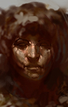
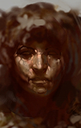 


 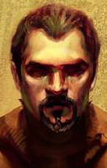
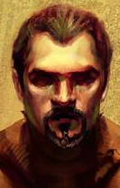 


 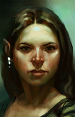
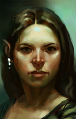  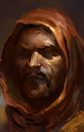
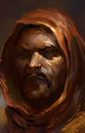 
 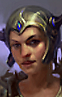
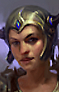  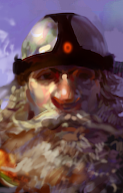
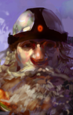